少林内劲一指禅功法体系
少林内劲一指禅的练习体系包含兼具实践性和理论性的方法。它包括动功、静功、行功、指法练习以及精神修养。此外，还有武术练习，如少林功夫"罗汉神拳"，以及多种应用方法。总体而言，少林内劲一指禅包含六个阶段，每个阶段又有不同层次。每个阶段都包含实践和理论部分。少林内劲一指禅的初级阶段包含三个层次。
本章描述的练习是初级阶段的重要组成部分。其中，"马步桩"尤为重要，因为它是少林内劲一指禅最重要的基础练习之一，在整个体系中都有应用。此外，还将介绍一种在站桩中练习的、用于增强免疫系统的特殊指法练习。
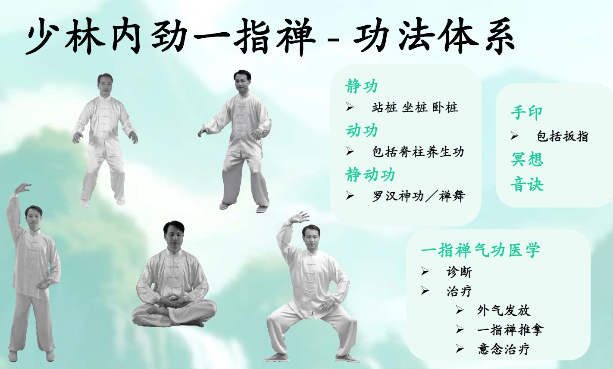
练习少林内劲一指禅功法最好要有气功师的指导，因为此门功法对姿势的正确性要求比较高， 有气功师的指导就可以不断得到纠止，少走弯路，就能获得事半功倍的效果。
初级阶段的练功原则
学练少林内劲一指禅功法，在初级阶段要掌握以下四个练功原则。
1. 全身放松
练功时全身放松是所有功法中必须遵守的要领，也学好本功的要领之一。练功者如能做到全身放松，功夫就容易上升，以至于达到相当的程度。在练功过程，首先要求摆好正确姿势，并保持相当时间不变换其姿势。一般练功者，在站桩过程中会出现越站越紧的情况，随着站桩时间越长，练功者有意无意的出现了用力状态，所以说练功时要做到“松”是件很不容易的事。如果经过一段时间的练功之后, 握了站桩要领，逐步做到”全身放松”。在练功过程中、越练越松。这就意味着练功者的功夫也到了相当程度。练功时的全身松是所有者必须重视的一个重要环节。
2. 静中求动
少林内劲一指禅其功法特点之一是外静内动。就是说它通过不变的外形功架，使得内气在体内沿着确定轨道运动，这是本功法练功的一种独特方式，方法简单易学。练功者却可以较快地掌握“内劲”是一种顺其自然的气机内在的运动，练功者勿需引导调整，只要摆好正确桩架就可以了。
3. 不断增强耐力
练功要着重一个“练”字，也就是说，功夫是靠耐力加技巧练出来的，不是轻轻松松得来的。初学者大多数要经过一个酸疼的过程。这是什么原因呢？正像一个人初次挑担子，肩部经受压力后而产生酸疼一样。开始站马步桩也会出现酸疼感觉，坚持下去，酸疼就会自然消失，这种现象一旦消失就会感到身体健康、精神愉快。这是每个练功者必经之路。少林内劲一指禅通过功架特定姿式及其变换，使气血在体内顺其自然运行达到疏通经络，增强新陈代谢，消除疾病，从而达到强体目的。初练功者必须把握初级力法要领和特点，正确理解初级功法的作用。
4. 逐步延长练功时间
初练功者站桩十几分钟就有酸疼的感觉，原因是内气在体内迅速运动所造成的局部的扩涨效应，这种效应持续时间不会很长，身体素质较好的练功者能够较快地适应这种自然反应。对于身体虚弱者或者对于那些患关节炎症的练功者反应会更加明显，属子这种情况的练功者就不必勉强坚持，可以量力而行，实在支撑不住，可以体息一下再练，逐步延长时间，只要坚持长期锻炼同样可以达到应有的目的。
热身法
无论是动功还是静功练习，都应始终以放松活动开始，以使身体放松、心神宁静。经典的准备活动除了通过抖动放松肌肉外，还包括拉伸以活动关节、激活经络，以及按摩以促进气血流动。下面介绍一小部分适合准备活动的放松练习。
“热身法”是本功法练功前的一套准备动作，可以使站桩事半功倍。热身法有了热能的产生，才能有热能场推动自身场效应。每个人练功都存在着一种身体潜在的物质能量。所以练功的时候就要有规律、有顺序地进行，才能体现出爆发力，才能有外气内收、内气外放，就能够对他人导引治病。有人说：“我不做热身法，直接站桩行不行？”在教功实践当中，这么多年总结经验。热身法对于祛病，对于治疗上起到了决定性的作用。才能使马步站桩产生强大的爆发力，才能储藏内力，推动气血的运行，起到治病、调理气血、按摩脏腑的作用。
抖抖功
双脚与肩同宽平行站立，全身放松。眼睛可睁开或闭上。面带微笑。开始通过膝盖轻微上下弹动，放松地抖动身体约1分钟。手臂和肩膀完全放松地垂于身体两侧。
抖抖功教学视频，请点击：热身法- 抖抖功
脊柱蛹动
该练习能调节并增强经络系统及全身各脏腑系统的功能。它对神经系统具有修复与再生作用，并能维持中枢神经系统的和谐状态。该练习特别适合预防和缓解背痛，以及腰椎和坐骨神经相关的问题。此外，它对改善心理健康状况、缓解神经衰弱、应对其他神经系统失调以及控制体重也有显著成效。
该练习有助于释放紧张情绪，带来身心解放之感，并营造内心的宁静。
动作流程
保持放松的基本站姿，面带微笑。
膝盖微屈。倾斜骨盆，上身微微前倾，仿佛准备坐在一把椅子上。接着，活动脊柱和身体，让一股“波浪”般的动能从髋部开始向上涌动。具体做法是：将骨盆向前推，带动上身自然向后舒展。在此动作阶段结束时，膝盖轻轻伸直，头部向后仰。双臂自然配合动作，在身后微微摆动，起到平衡身体的作用。
手掌向下按压，胸部向上挺起，以此短暂地制造轻微的张力。此时，波浪般的动能已达到最高点。在整个动作阶段中，请保持用鼻吸气。
释放张力，让波浪般的动能顺着身体向下流动。具体做法是：双肩向前转动，双臂移至身前，最后双手放松地停留在小腹高度。同时，将骨盆向后移，再次屈膝。双臂与骨盆的动作会带动上身自然、放松地向前弯曲。在此过程中，请确保颈部放松，下巴轻柔地向胸口靠拢。在此动作阶段，请用口呼气。随后，按照上述方式再次向前推骨盆、向后摆动手臂，开启新一轮向上的波浪式动作。
练习频率与结束动作
该练习应重复进行六次。在最后一次重复动作结束时，直接从当前动作返回起始姿势。
注意事项
波浪般的动作会流经全身关节，并逐节传导至整个脊柱。因此，重点在于保持动作的流畅性，并有意识地练习背部的屈伸。练习过程中，双脚需始终稳稳地踩在地面上。初学者可以借助意象辅助练习：想象骨盆由前向后摆动，同时双臂向相反方向（即由后向前）摆动。
练习时可睁眼或闭眼。若睁眼，视线应自然跟随动作移动；若闭眼，则应将内视的焦点集中在波浪式动作当前流经的脊柱部位。
脊柱蛹动教学视频，请点击：热身法- 脊柱蛹动
转髋
双脚与肩同宽平行站立。全身放松。眼睛可睁开或闭上。面带微笑。将手掌轻轻放在后腰肾区。肩膀保持放松。现在让胯部逆时针转动9次，再顺时针转动9次。转动时双脚稳固地站在地面上。
腹部按摩
双脚与肩同宽平行站立，全身放松。眼睛可睁开或闭上。面带微笑。将双手缓慢相叠放于下腹部。女性右手直接贴于腹部，左手覆于其上；男性则先左手后右手。现在用放松的肩膀、手臂和手掌，顺时针方向按摩腹部9次，再逆时针方向按摩9次。
热身法动功练习视频
2025年德国夏令营-动功练习站桩功法
站桩功法（中国传统中称为“站桩功”）属于静功范畴。它是少林“内劲一指禅”的重要组成部分，也被形象地称为“如树桩般站立”。该体系中最核心的站桩功法是马步桩。
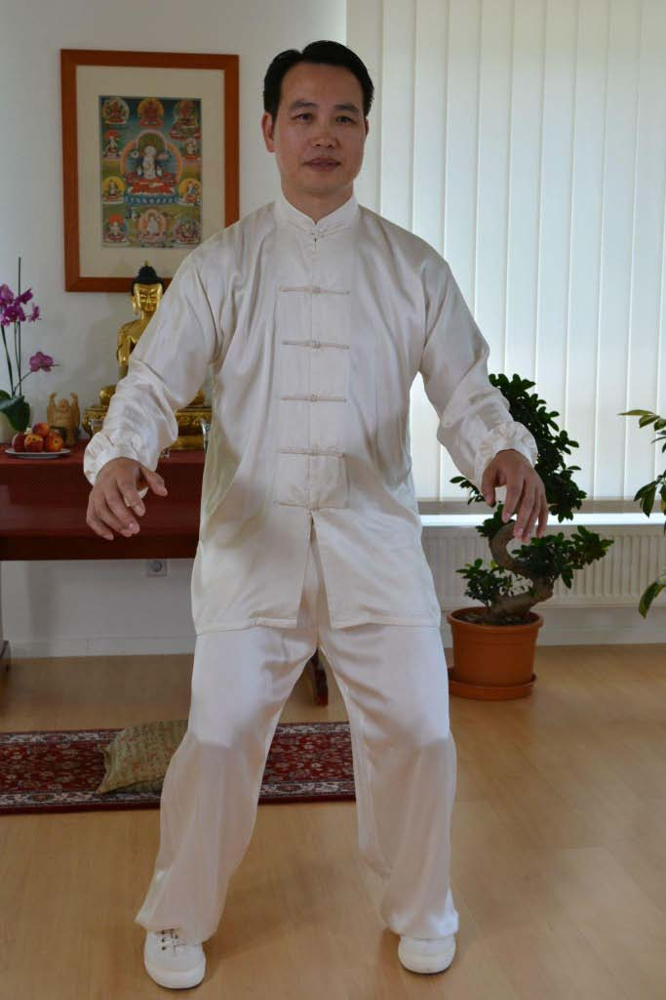
站桩是聚气与增强内劲的有效方法。其关键特征在于长时间保持特定的站立姿势，这既能强健筋骨与肌肉，又能促进并调节新陈代谢。通过练习，气在经络中畅通无阻，气血达到阴阳平衡，免疫系统得以增强，从而起到防病治病的作用。站桩功法——尤其是马步桩——能够激发人体与生俱来的潜能。
马步站桩
身型：
- 两脚分开与肩同宽（两脚间距离为本人一脚掌），脚尖对准前方，两脚平行或两脚尖略成内八字，曲膝下蹲，两脚趾抓地：重心在脚跟。两膝外展，裆圆。
- 含胸拔背，上身保持正直，脊椎要直，略收腹。
- 上臂自然下垂，小臂弯曲，向前平伸（肘离身体前部和侧部约一横拳，前臂与地面平行，两臂也相互平行。
- 手背与臂平，手掌外侧与臂外侧也平。
- 手掌斜向地，如抓球状，掌心要空要虚，五指分开，食指稍高，中指稍低，其它各指依次类推。
- 头正，颏收，两眼平视前方。
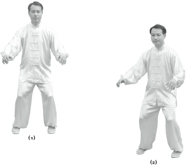
手型：
手型是本功法的重要组成部分，其姿势正确与否至重要。手型姿势不正确，练功效果就差；手型姿势正确，效应倍增。
手掌放松，五指如抓球状，指与指之间略有间隙，食指稍高，中指稍低，似梯形，虎口要圆，掌心要空、要虚。
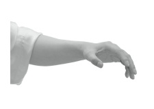
基本站姿
基本站姿是几乎所有少林内劲一指禅功法的起始姿势。它至关重要，因为无论是动态功法还是静功练习，都以此为起点。在练习开始前，这一姿势有助于习练者进入平静状态，使呼吸自然顺畅，并将心神集中于即将进行的练习。 站立时姿态自然放松，面带微笑，目视前方。舌尖轻抵上颚。双脚平行分开，与肩同宽，膝盖微屈。双臂自然垂于身体两侧；上臂与腋下之间保持约一个乒乓球大小的空隙。双肘微向外展，从正面看，双臂形成柔和的弧度。肩、肘、腕各关节均保持放松。手掌放松，掌心朝向大腿。手指自然伸展但保持放松，互不接触（图105）。
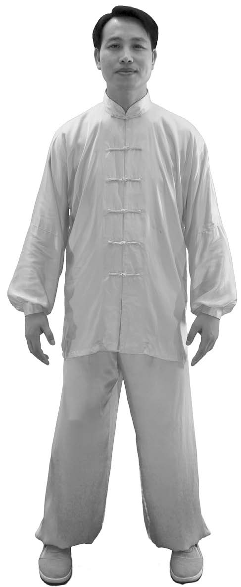
摆出马步姿势
预备练习的目的是正确摆出马步姿势。这一过程能打开特定的穴位，并激活经络中的气流，从而确保马步练习从一开始就能发挥应有的功效。
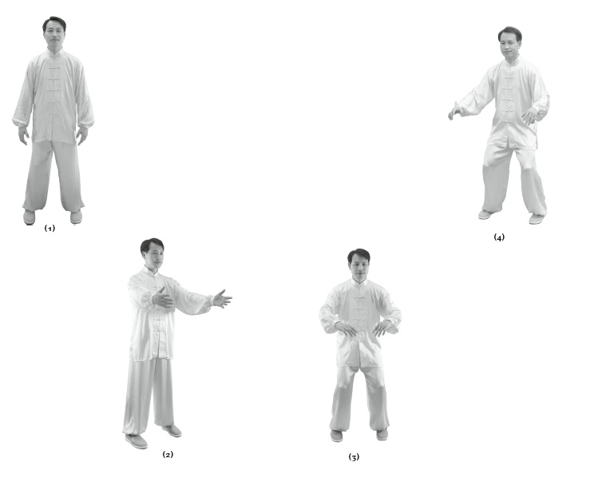
站桩功法的收功
妥善结束练习至关重要，因为这有助于巩固练功时积聚的气，并使其均匀分布于全身。正确的收功动作能让身体平稳过渡，恢复到日常活动状态。此外，收功还能预防气机阻滞以及头部、上身和四肢可能出现的紧张感。收功过程包含两个部分：
收功第一部分
- 保持马步姿势，双手掌心朝向身体，缓慢向腹部移动；同时，膝盖轻缓伸直，身体随之缓缓站起。在此动作过程中，用鼻吸气。
- 接着，双手逐渐向身体两侧移动，并沿大腿外侧下落。动作结束时，双肘应自然伸展。双手握成松拳，大拇指扣于拳内。在此动作过程中，用口呼气。
- 从基本站姿开始，将左脚向右脚方向稍稍靠拢。双臂自然垂于身体两侧，双手保持松握成拳的状态。接着，张开双手，双臂保持微伸，向两侧抬起并经由头顶划出一道圆弧。在此过程中，手掌向外翻转，最终掌心朝向天空。当双臂升至圆弧最高点时，掌心应相对但不接触。随后，继续向内划圆，将手掌转为朝向地面。整个动作过程中，请保持用鼻吸气。
- 双手保持掌心朝下，从躯干前方下移，依次经过腹部、下腹部和大腿位置。当双手降至髋部高度时，将其收回身体两侧，并再次将手掌向外翻转。在这一整套动作序列中，请保持用口呼气。
- 重复上述动作（包括吸气与呼气）两次。这一收功练习部分总共需进行三次。最后，双脚平行站立，间距与肩同宽，恢复至基本站姿。您可以就此结束练习，或者根据意愿，继续进行第二部分所述的致谢动作。
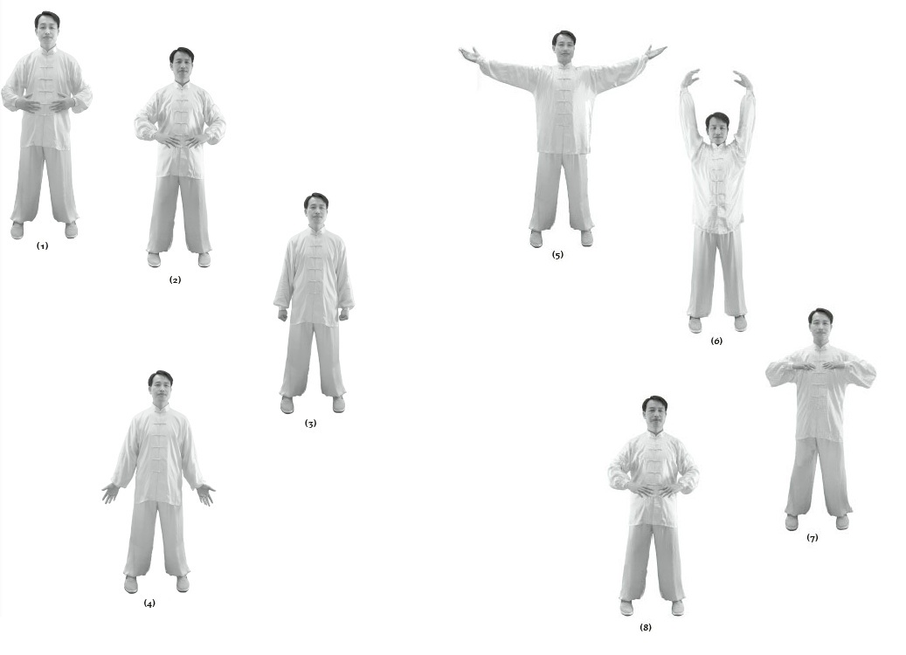
收功练习的第二部分
- 以基本站姿舒适站立，双手合十于胸前。此时，上身微微前倾，向大自然或宇宙致谢，感谢通过练习所获得的能量。
- 这份感恩之情也应延伸至历代创编并传承各种修炼方法的宗师与老师们。在正统的气功体系中，这种表达感恩的举动是一项重要传统；尽管起初它看似仅是一种形式上的动作，却蕴含着深远的意义。通过这一动作，修炼者能与大自然建立紧密联系，并培养感恩、慈悲与爱心。
- 让双手缓缓下落，结束收功练习的这一部分。
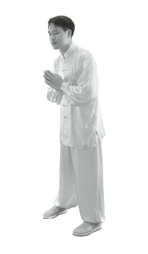
注意事项
如果时间允许，练习结束后不要立即坐下；不妨四处走动或散步片刻，让身体进一步放松。轻拍或按摩身体也是一种令人愉悦且值得推荐的做法。具体步骤如下：
- 首先，双手掌心相对摩擦，直至发热。
- 随后，用双手轻柔按摩面部、揉搓耳朵，并从前额开始向后抚摸头部数次——动作犹如用手指将头发向后梳理一般。接着，抚摸颈后并按摩喉部。最后，将手掌贴于肾脏部位，向下抚摩该区域数次。
- 随后，用双手轻拍肩部、四肢、背部、胸部及腹部。
马步站桩的学习资料视频链接
起式：马步站桩 - 起式
站桩：马步站桩 - 站桩全过程
收式：马步站桩 - 收式
马步站桩的学习资料音频链接
1, 一指禅站桩放松法音频：一指禅站桩放松法_©郑博音
2, 80分钟一指禅站桩放松法+桩中定：80m__一指禅站桩放松法N桩中定_©郑博音
3, 一指禅-桩中定：一指禅-桩中定_©郑博音
“一指禅-桩中定” 郑博音大师专门为少林内劲一指禅的站桩谱写的这首歌曲，其歌词包含了少林内劲一指禅的功法和心法。
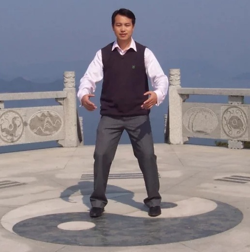
“一指禅-桩中定”歌词 ©郑博音
心平气和…脸带微笑… 全身放松…随其自然… 沉肩坠肘…含胸拔背… 下颌微收…气沉丹田…
心怀慈悲…自利利他… 一桩一法…气运全身… 在天地间…唯吾独静… 明空不二…任运自然…
随其自然…来去自由… 念起念落…不执不留… 变化无常…心自如如… 外观内静…神清意柔… 神静心宁…是诀窍… 天人合一…是真机…
随其自然…来去自由… 念起念落…不执不留… 变化无常…心自如如… 外观内静…神清意柔… 神静心宁…是诀窍… 天人合一…是真机…
心平…气和… 身心…安宁… 空灵…自在…
郑博音大师谱写的这首少林内劲一指禅站桩歌曲，是一首兼具“实用功法指南”与“高阶心灵滋养”的禅乐杰作。 歌曲巧妙地将复杂的传统气功要领转化为易记、易诵的诗化语言，不仅在生理（调身）层面上指引习练者，更在心理（调心）与精神（发心）层面上实现了对功法的升华。
我们可以从以下四个核心维度对这首歌曲进行理解和运用：
1. 调身：化繁为简的“动静态身体指南”
歌词的前半部分精准地捕捉了站桩的基本身法：
- 动作要领的音乐化：“沉肩坠肘、含胸拔背、下颌微收”是标准的少林内劲一指禅身法要求。歌曲将这些原本枯燥的教学指令变成了律动感十足的歌词，帮助习练者在跟随音乐吟唱或聆听时，自然而然地对镜自查、修正身形。
- 从局部到整体：从细节的“沉肩坠肘”过渡到“气运全身”，完美体现了内劲一指禅通过调整特定姿势，达到全身经络通畅、气血任运的“以姿势带气”功法特点。
2. 发心：大乘佛法的“慈悲利他情怀”
这首歌最核心的升华在于引入了“心怀慈悲，自利利他”的修持观：
- 打破狭隘的健身观：传统气功常被误认为只是个体的养生或防身，而这首词将其提升到了慈悲度人的高度。
- 正向的意念引导：在功法中融入“利他”的善愿，能让习练者在站桩的枯燥与酸痛中产生强大的精神支撑，以大爱之愿化解身体的僵硬与疲劳。
3. 调心：破除执着的“禅宗无住智慧”
歌词的后半部分（“念起念落，不执不留……变化无常，心自如如”）展现了极高的禅宗智慧，与内劲一指禅“不要入静、不要意守”的心法高度契合：
- 任运自然：它不强求习练者刻意去“断绝杂念”，而是像禅宗对待妄想一样——“随其自然，来去自由”。念头生起就让它生起，念头落下就让它落下，不迎不拒。
- 动态的平衡：面对站桩过程中身体的种种变化（如酸、麻、胀、痛等“变化无常”），保持“心自如如”的不动心。这种“外观内静、神清意柔”的境界，正是对“不执着”最好的诠释。
4. 境界：“天人合一”的终极真机
歌曲的复沓句和结尾（“神静心宁是诀窍，天人合一是真机……空灵自在”）指明了功法的终极归宿：
- 从有作到无为：站桩始于有形的身体调整（有作），通过音乐的熏陶与心法的洗涤，最终走向“在天地间，唯吾独静”和“明空不二”的无为境界。
- 人与自然的融合：此时的习练者已不再是一个孤独站立的个体，而是与天地同呼吸、共命运的整体，完美诠释了东方养生哲学中最高级别的“天人合一”。
总结
这不仅是一首歌，更是一门流动的多媒体功法教材。郑博音大师通过音乐这一载体，降低了功法的入门门槛，让习练者在音乐的加持下更容易进入“身心安宁、空灵自在”的功态。对于少林内劲一指禅的传习者而言，它是一剂绝佳的催化剂。
坐功桩架
练功者平坐在木凳的边沿上（不能坐得太实，竞子高低要适中），两脚分开与肩同宽，两脚间距离约一横脚，两脚平行或两脚尖略成内八字，膝盖要张开，膝遊不能超过脚尖，脚趾抓地，脚心空，保持档圆。上身姿势同马步桩。
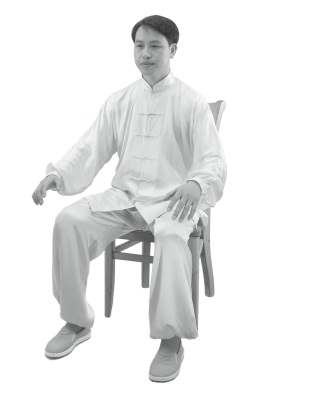
卧功桩架
- 预备姿势：仰卧在床上，头部略比枕高些，两腿放松伸直，手臂置于身体两侧，手掌贴在大腿侧面
- 屈膝，脚跟着床板，两膝眼相接，两大脚趾相接，或两脚平行分开与肩同宽，脚心要空
- 上身姿势如同马步桩，两手肘可以接触床。
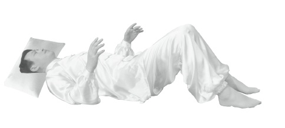
一指禅的心法之一: ＂心平气和，面带微笑。全身方松，随其自然＂。你可以在练功时，特别在站桩／坐桩时，除了三线放松法之外，可以细细体会这4句口诀的意义或者境界。体察口诀的方式可以帮助练习者放松，入静，使身心达到和谐平衡的状态。此句口诀也尽量在工作和生活中加以运用。慢慢地就能达到知行合一，这是练功生活化的妙用。虚与实之间关系一定要处理得当少林内劲一指禅功是以站桩为基础的，所以对虚实一定要处理好，它要求练功者全身放松，内气运行就会畅通无阻，但松还必须掌握住适度，要做到松而不懈，实是对虚而言，它既要支撑住所要承受的压力，又要尽其最大限度将其放松，做到恰到好处。练功时身体出现一些感觉，如酸、麻、胀、凉、热、重、痒、虫爬行等，称之为八触，这些都是正常反应。
禅舞
在少林内劲一指禅功法体系中，禅舞（也被称为罗汉神功的延伸或高级静动功）占据了非常独特的地位。它与传统意义上的舞台舞蹈不同，而是一种将“身体、心灵、内气、音乐、环境”五合一的动态冥想形式。
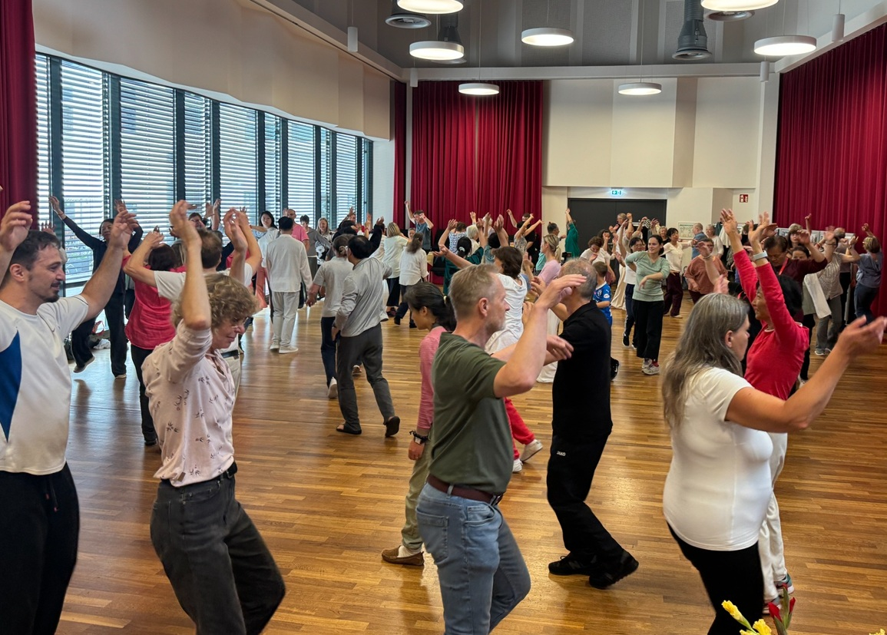
关于少林内劲一指禅体系中的禅舞，其核心理念和习练特质如下：
🕊️ 什么是内劲一指禅的“禅舞”？
- 带气舞动，随心而发：禅舞的精髓在于未经排练、没有固定的舞步或对错之分。它是习练者在少林内劲一指禅的站桩（静功）与动功积累了充足的“内劲”后，身体气脉通畅的一种自发性律动。
- 动态的正念冥想：当音乐响起时，习练者闭上双眼，将所有向外的意念完全收回体内。跟随当下的呼吸与体内的气血流动，让身体自然地伸展、流转，仿佛与天地融为一体。
- 松而不垮，紧而不僵：郑博音大师强调禅舞需要一种“放松且专注”的中道状态。不能因为追求放松而变得松松垮垮，也不能因为过于专注而显得身体硬邦邦，要像流水或清风一样自然。
🌿 禅舞对身心灵的调理功效
- 深度疏通心理与情绪堵塞：在中医与气功理论中，情绪的压抑会导致体内气血通道的堵塞。禅舞通过无拘无束的肢体律动，能快速打通积压在胸腔、脊椎和关节处的郁气，许多习练者在跳禅舞时会自然地释放压力、甚至流泪排毒。
- 重整骨骼与身体通道：类似于八段锦、易筋经等传统功法，禅舞也是借由动态的舒展来拉长身体。在气的带动下，身体会自动去修复、调整那些平日久坐劳损的肌肉与骨骼关节。
- 自愈力的深度唤醒：在禅舞的境界中，舞者和周围的能量场产生共振。这种高度入禅的状态能够极大地滋养体内的阳气，增强免疫力并安神定志。
🎓 如何修习禅舞？
由于禅舞属于静动功（高阶功法体系），通常不作为零基础大众公开公益课的单独教学内容，而是贯穿在长期的系统修习中：
- 功法层层递进：在少林内劲一指禅的三年班中，学员会系统地从放松法、脊柱养生功、马步站桩等基础练起，随着内劲的增强，逐步接触到罗汉神功与禅舞的高阶实践。
- 线下工作坊的共振：在少林内劲一指禅的线下工作坊与夏令营中，由于有强大的集体功场和导师亲传的气场加持，学员往往更容易在现场音乐的引导下，突破思维的限制，真正体验到第一次“随气舞动”的禅舞初体验。
禅舞视频
2025年德国夏令营-禅舞
太极尺
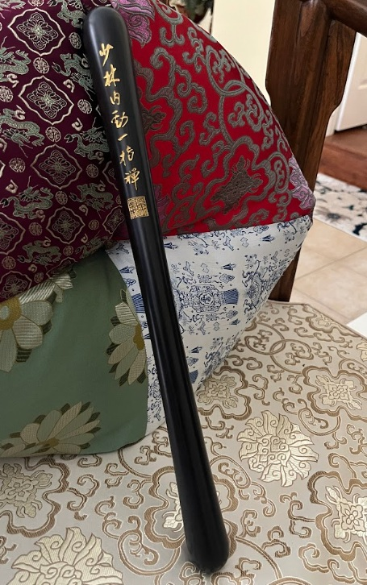
太极尺并非少林内劲一指禅的正统核心功法体系，它更多属于传统道家养生及太极功法中的气功器具与修炼法门。 由于郑博音大师出生于中医武术世家，自幼不仅修习医学气功，也深入学习了太极和传统武术。在传统武术圈的教学中，有两类情况会让他将“一指禅”与“太极尺”产生关联：教学工具的借用：在海外（如德国、美国硅谷等）传授气功时，为了让现代人或外国学员更具象地体会到手臂、掌心（劳宫穴）之间的“内劲”与“气感”，有些老师会借助太极尺（或太极棒）作为辅助教具。通过双手持尺进行旋转、开合，能帮助初学者更快找到身体的“轴心”和“缠丝劲”。融会贯通的功法体系：内劲一指禅讲究“运用升降开合、阴阳虚实、八卦图及缠丝劲等概念”。郑老师结合自身的中医与太极背景，在传授少林脊椎复健功法（动功）时，偶尔会融入太极尺的导引动作，达到平秘阴阳、活络关节的目的。
传统太极尺与少林内劲一指禅的区别:
少林内劲一指禅：核心以马步站桩、手指扳动（手印）、双臂揽月、外气发放及推拿为主，强调姿势准确、不主张刻意意守。
太极尺功法：多源于道家内丹或混元太极尺棒功，通过双手持握木制太极尺进行旋转、开合、导引，以达到调和气血、培元固本的作用。融合现象在实际民间武术与气功交流中，部分习练者（如兼修少林内劲一指禅与太极拳、道家气功的传人）会将太极尺作为辅助器械，结合站桩身法来增强手臂缠丝劲和内气感，但其本身不属于一指禅的原生套路。
在少林内劲一指禅的功法理念中，关于“太极尺”的功法特点可以从以下几个维度来理解：
- 一指禅体系下的“持尺/模拟持尺”练法的核心要求与普通太极尺不同，它带有鲜明的一指禅特色：不意守，不入静：这是内劲一指禅最核心的原则。即使两手持尺（或想象手中抱有一把尺/一个气球），也不要死死用眼神或意念去盯着它，要保持“上虚下实，面带微笑，自然呼吸”的状态。
- 结合脊椎运动：郑博音大师非常强调脊椎健康。双手在胸前持尺做圆周轨迹导引（前推、下落、内收、上提）时，力量不要用在手臂上，而是要由腰椎、胸椎的微微前后蠕动来带动双臂，做到“形动而心静”。
- 十趾抓地与圆裆：下半身依然需要保持一指禅马步桩的基本架构（双脚平行、脚尖稍内扣、屈膝、圆裆松胯），以此作为持尺运动的稳固底盘。

在家练习这套功法时，若能着重把握郑博音大师强调的以下三个“结构整合”要点，便能优化您的训练效果：
- 动态的“脊柱驱动”引擎——常见误区：仅靠手、腕或肩部来移动太极尺。正确方法：每一次转动都应由腰椎和胸椎启动。当尺向前移动时，脊柱轻柔伸展（展胸）；当尺回收到腹部时，脊柱微微屈曲（含胸拔背）。双臂的动作仅仅是脊柱这一中心波浪式运动的自然延伸。
- 一指禅的“无意守”原则（不意守）——常见误区：死死盯着木尺，或刻意专注于让“气”在掌心流动。正确方法：遵循一指禅的黄金法则——不刻意用意念，也不强求静止。保持双眼放松，目光柔和地平视前方，面带微笑。让尺的物理形态自然引导劳宫穴对齐，无需刻意用意念去控制。
- 下盘扎根（马步根基）——身体状态：当上身随尺动态流动时，下身必须稳如泰山。检查要点：双脚平行，脚趾轻抓地面，膝盖对准脚尖方向，髋部放松（松胯）。这样便形成了“上身灵动轻盈，下身扎实沉稳”的鲜明对比。
郑博音大师的太极尺视频
太极尺-立画太极 太极尺-前推翻浪
一套简易日常功法
一项在日常生活中易于使用的技术是"米字功"。它特别适合久坐、压力大、颈椎有问题或经常头痛的人群。此功法基于中文"米"字的书法笔画顺序。练习时，头部按照书写此字符各笔画的顺序进行运动。练习的各个步骤描述如下（图142）。
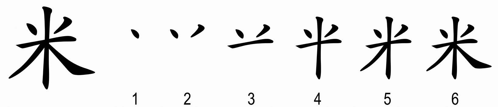
米字练习
- 舒适地站立或坐着。脊柱挺直而放松，头部端正。目光自然向前，或闭上眼睛。这是练习的起始姿势。
- 放松全身，使心神安定。
- 微笑。
- 头部向左上方移动，同时用鼻吸气；再将头部回到起始位置，用口呼气。
- 头部向右上方移动，同时用鼻吸气；再回到起始位置，用口呼气。
- 将头转向左侧，用鼻吸气；再转回起始位置，用口呼气。
- 将头转向右侧，用鼻吸气；再转回起始位置，用口呼气。
- 头部后仰，用鼻吸气；再回到起始位置，用口呼气。
- 头部向下低头，用鼻吸气；再回到起始位置，用口呼气。
- 头部向左下方移动，用鼻吸气；再回到起始位置，用口呼气。
- 头部向右下方移动，用鼻吸气；再回到起始位置，用口呼气。
练习次数
通常练习5～7遍，也可根据需要增加次数；必要时可每天多次练习。
注意事项
头部的所有动作都应平稳、连贯、缓慢。每个动作之间短暂停顿片刻。若尚不习惯将动作与呼吸配合，可先只做动作，自然呼吸即可。
功效
该练习可放松颈椎和颈部，使头部与全身之间的气血流通顺畅，缓解颈部紧张，改善头痛与眩晕，并有助于减轻压力和紧张情绪。
心神的修炼
心神的修炼是中国传统正统气功的重要组成部分。少林内劲一指禅拥有多种修心养性的修炼方法，其中尤为重要的是**“放下”的练习，因为它能化解多种阻滞，使身体、心与神回归和谐与安宁。在气功修炼中，这条道路上最关键的一步，便是道歉与原谅**的方法。
通过道歉与原谅来放下的方法
通过道歉与原谅来放下，是许多灵性传统中都存在的方法。在少林内劲一指禅中，它是一种用于增强健康、获得内在平和与幸福的重要修习。在静功冥想中，修炼者分阶段回顾自己的人生，清理“旧有负担”。通过为自身的过失道歉、为曾遭受的伤害而原谅他人，可以化解紧张与内在阻塞，从而消除身心疾病的根源。经络中正向能量（气）的释放，最终启动自愈过程。
道歉与原谅的修习在世界许多文化中广泛存在，常被融入宗教仪式之中，例如基督教中的忏悔与祈祷。同时，它们也是许多东亚冥想体系的重要组成部分，并已逐渐为西方社会所熟知。直到今天，道歉与原谅仍是和谐生活与保持健康的重要基础。在少林内劲一指禅中，它们是强身健心、修炼心神不可或缺的根本方法，其运用不受信仰或宗教限制。
身心合一
少林内劲一指禅远不止是单纯的身体与呼吸练习。从名称即可看出其根植于传统禅宗（后在日本发展为禅宗佛教）。少林僧人的传承在于：身与心的修炼不可分离，禅的精神修养，以及中国医学哲学的延续。
因此，在学习动功与静功的同时，特别重视学员道德品性的培养是顺理成章的。佛教哲学的重要原则之一，是培养对他人、对自然万物的慈悲之心。随着对少林内劲一指禅奥义理解的加深，修炼者会逐渐发展出帮助他人的能力，并因此对自己所获得的潜能承担起尊重而有益的责任。
凡是认真希望将气功与内家武艺修炼至较高境界的人，都必须先让自己“空下来”。这需要通过修心来超越自我与痛苦，尤其要放下对私欲满足和固有观点的强烈执着。即便不以成就大师为目标、不深入佛学的人，也应反思：是什么阻碍了自己的幸福？深入观察便会发现，幸福往往被痛苦与愤怒、仇恨、嫉妒、贪欲与妒忌等负面情绪所扰。禅宗有一句话一针见血地指出：“和平与幸福，取决于内在的态度。”
我们的思维与情感深受过往经历和环境影响。只要痛苦与负面情绪仍对我们施加影响，内在的平和与幸福便无从谈起，内在阻滞、紧张乃至疾病也常由此产生。通往和平与幸福的唯一道路，是信任、尊重、爱与慈悲，而其中最关键的一步，正是通过道歉与原谅来放下。
放下
放下是实现身心和谐的最重要前提。所谓命运打击、自身过失以及遭受的伤害，这些负面印记会逐渐限制我们的思维与行为自由。即便事件早已过去，与之相关的信息仍存留于内在，造成身心失衡。尽管多半是无意识的，但它们仍妨碍我们中立地看待事物、开放地面对世界。放下的过程涉及多个层面：接纳自身人生的现实，顺应自然的真理，承认因果规律。通过道歉与原谅的方法，便迈出了放下的重要一步。
道歉的修习
诚实地承认自身的不足与错误，是道歉修习的基础。此练习旨在化解阻塞与储存在身体记忆中的负性能量（病邪之气）。在生活中，我们有意或无意地累积过错：对他人产生恶念、口出恶言、说谎，或以言行伤人——这些都会损耗我们与生俱来的生命能量“气”。在冥想中为自身的过失真诚道歉，是恢复能量纯净的重要途径。关键并非一定要向当事人当面致歉，而是发自内心、在意识中真诚完成道歉；如此，也可向已不在人世的人致歉。
练习方法并不复杂：在特定的冥想中，闭目回顾前一天的行为，若发现确实感到懊悔之处，便在心中致歉。然后逐步回溯至前一周、上个月、上一年，乃至最早的记忆；或按人生阶段回顾，如成年期、青年期、童年期。道歉的对象有时并非他人，也可能是自己的身体、心灵，动物、植物，乃至整个环境。
有时情绪深沉，伴随痛楚或悲伤；有时则轻松而平淡。练习越多，越能深入被压抑的记忆层面。随着修习的深化，承认错误并为之负责会变得愈发自然，其结果往往是迅速产生的巨大轻松与解脱感。道歉练习直接影响道德品性与行为，帮助我们分辨生命中真正重要的事物，并避免重蹈覆辙。
原谅的修习
原谅与道歉紧密相连，其过程与之相似。在回顾人生或各个阶段时，审视那些曾被视为伤害的经历，并以开放的内心原谅造成伤害的对象——可能是人，也可能是其他生命。表面看来，原谅过去的伤痛似乎容易，但实践中往往比承认自身错误更为艰难，因为自我会不断为曾受的伤害寻找理由，以维护其表面的重要性。
宽容无法仅凭理论或书本获得，只能在真实的人生体验中习得。那些让我们不适的情境，恰恰帮助我们看清：万事万物都通过无数因果相互连接。若能如此深入反思——例如，对方当时是否真正自由地思考与行动？是否因困境而作出错误判断？是否其成长背景不同？是否我们自身的行为也曾诱发其反应？——那么，原谅便不再遥远。真诚踏上这条道路的人，往往在痛苦之后获得更强大的内在力量、更大的宽容与更深的慈悲。
通过冥想获得中和之力
通过道歉与原谅来放下，与一种三阶段的冥想技术相结合。本书介绍的是第一阶段，易于在日常生活中运用。实践中，可将道歉与原谅分开进行，例如先数日或数周专注于道歉，再转向原谅；或反之；亦可同时进行。当在道歉中浮现受伤记忆时，可立即练习原谅；反之亦然。
这两种方法适合所有人学习，可在站、坐或卧的冥想中进行，尤以坐姿（椅上或地上）为佳。可参照“坐式练习2：以信任修心”或“坐式练习3：以内在宁静修心”。练习时可闭目，先放松身体、安定心神、向诚实敞开心扉；在内在宁静中放下日常，回归中心，开始道歉与原谅。结束时，可观想温暖的天水流遍全身，净化身心，排出负性能量。
少林内劲一指禅及其通过道歉与原谅而放下的方法，蕴含着产生深度内在宁静的力量。它为从容应对日常挑战奠定坚实基础，带来真正的健康，并使我们能以稳定的内在中心，积极陪伴和帮助他人。数千年来，哲人、僧侣与大师探索着解决人类问题、解放身心的道路，其智慧凝结为融合科学、哲学与智慧的实践方法。如今，这一珍贵传承也能为西方社会带来裨益。若我们真诚实践这些方法，必能化解自身的问题，领悟生命的真正意义。

内气运行的几种现象
练功效应是每一个练功者都会出现的在人体内部的一种感宽反应——气感。这是每一个练功者所特别关心的问题。它的反应很难与一般地体育锻炼所取得的成绩作比较，一般地讲，体育锻炼都是作肌肉和骨胳方面力量锻炼，用肉眼就能观察到，而气功锻炼一般是身体内部的锻炼，平时没有这种内部锻炼习惯的人，对子体内发生的各种感觉不容易去理解，倒反而容易产生一种神秘感，再加上有些人故弄玄虚，夸大各种感觉，更加引起了人们对气功的猜疑。事实并非如此，只不过是人体内的气机运动而已。少林内劲一指禅功法，经过一阶段锻炼后，就有热、麻、胀、疼以及其他现象出现，都是自然现象，是气机运行的反映，练功者不用害怕，这都是练功者正常的生理效应。为了说明练功中的几种情况，举例如下：
- 热练功过程中出现的奇热感，且以片状出现。
- 麻 身体局部有麻木的感觉，就像针刺肌肉的那样的感觉
- 胀 身体局部有发胀的感觉，好似非常饱满的感觉。
- 重 身体局部有一种蜇物压迫的感觉。
- 痛 身体某部有疼痛感、产生这种感觉一般地都是发生在病灶部位，说明经脉运行有阻。
- 僵硬感 比胀的感觉更为明显，尤其是在关节处，内气将关节撑直不能弯曲.
- 虫叮、虫爬感身体局部似有小虫叮咬感和小虫在体表爬动感。
- 走动感 有气流在身体内部（表皮下层）流动感觉。
上述各种效应并不是每一个练功者在练功过程中全都出现的。由于每个练功者先天素质和后天悟性不同，因而出现的效应也就不相同，其基本上可分为三个层次。
第一层次（指初级） 练功者经过半月左右的训练，就能感觉到手掌会出现发热的现象，逐渐地就由热变为麻、胀、重的感觉，掌心处尤为明显，随着练功时间延长，手掌就会发热，通常首先是大拇指与食指发热，继而是中指、无名指发热，最后是小指发热，功练到相当阶段就感觉右手掌心有一团热气球并随着内劲增加，热气球逐渐由大变小，最后呈黄豆粒大小，其密度也随之增大，并且不断在手掌心内旋转，并有钻进肌肉之感，手臂部开始有小虫叮、咬、爬动感，时上时下，随着时间的延长，这种小虫叮咬爬动感变为热流在手臂上下审动，继而脚心也逐步开始发热，腿部也有热流，而且越来越明显。
第二层次 练功者经过第一阶段训练后，功力有了进一步增长，通过变换桩架和扳动手抬，内气运行，由上到下、由里到外逐步由片状转变为条状，由粗逐步转细。且呈次序态。
第三层次 练功者身心进入理想境界。此时，练功所带来的反应特别明显，变化也特别大，内气流动方式，逐渐发生了变化，由原来的流动变为滚动，由原来的长条形状变化为圆形——这就是我们平时所说的气弹子。这些气弹 子，由大逐渐变小，其密度也随之增大，最后变成如黄豆一样大小火热的球状，在体内上下左右内外周流不息地滚动，要想达到这一境界，除了需要其他桩法和指法配合之外，更需要的是坚强毅力和悟性。
以上种种反应，只要练功者循序渐进，迟早都会出现，对于尚未出现的感觉也不要急于去追求。如果带着一种追求的心理去练功，不但不能得到正常反应，反会增加一些反常的感觉，这对练功并无好处，反而多走弯路。
练功中效应并非每次练功都能出现，尤其是对初练者来说，往往需要经过一个相当长的时间才能出现，再说个体也存在着差异，每人的灵敏度和反应也会有差异，所以练功者必须顺其自然进行练功。不要人为造成紧张，对于在练功过程中发生的舒适感过后也不要去留恋，更不能去追求它。
少林内劲一指禅的常见问题解答
马步站桩要领以及常見問題集 常见问题解答
我们提供练功说明、练习记录表及其他学习文件，方便您随时下载并作为日常修炼的参考。
参考资料下载： 资料下载